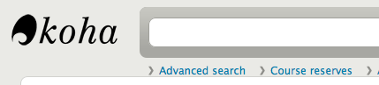

Course reserves
The course reserves module in Koha allows you to temporarily move items to ‘reserve’ and assign different circulation rules to these items while they are being used for a specific course.
Course reserves setup
Before using course reserves you will need to do some set up.
First you will need to enable course reserves by setting the UseCourseReserves preference to ‘Use’.
Next you will need to have all of your course instructors added as patrons.
Next you will want to add a couple of new authorized values for Departments and Terms.
You may also want to create new item types, collection codes and/or shelving locations to make it clear that the items are on reserve to your patrons. You will also want to be sure to confirm that your circulation and fines rules are right for your new item types (whether they be hourly or daily loans).
Adding courses
Once you have completed your set up for course reserves you can start creating courses and adding titles to the reserve list.
From the main course reserves page you can add a new course by clicking the ‘New course’ button at the top left.

Your new course will need a department, number and name at the bare minimum. You can also add in additional details like course section number and term. To link an instructor to this course simply start typing their name and Koha will search your patron database to find you the right person.
Once the instructor you want appears just click their name and they will be added. You can repeat this for all instructors on this course. Each instructor will appear above the search box and can be removed by clicking the ‘Remove’ link to the right of their name.
If you would like your course to show publicly you’ll want to be sure to check the ‘Enabled?’ box before saving your new course.
Once your course is saved it will show on the main course reserves page and be searchable by any field in the course.

Note
You can customize the columns of this table in the ‘Table settings’ section of the Administration module (table id: courses page, course_reserves_table).
Adding reserve materials
Before adding reserve materials you will need at least one course to add them to. To add materials visit the Course Reserves module.
Click on the title of the course you would like to add materials to.

At the top of the course description click the ‘Add reserves’ button to add titles to this reserve list. You will be asked to enter the barcode for the reserve item.
For each item, you can change the item type, collection code, shelving location or holding library. These changes will only apply while the course is active. When you deactivate the course, the items will go back to their original settings.

After you are done scanning the barcodes to add to the course you can see them on the course page

Note
You can customize the columns of this table in the ‘Table settings’ section of the Administration module (table id: reserves page, course_reserves_table).
You also have the possibility of adding several items at the same time. Click on ‘Batch add reserves’.

Scan the barcodes of the items you want to add to the reserve and change the item type, collection code, shelving location or holding library, if needed.
Course reserves in the OPAC
Once you have enabled course reserves and added courses you will see a link to course reserves below your search box in the OPAC.

Clicking that link will show you your list of enabled courses (if you have only one course you will just see the contents of that one course).
Note
You can customize the columns of this table in the ‘Table settings’ section of the Administration module (table id: course_reserves_table).
You can search course reserves by any field (course number, course name, instructor name, department) that is visible in the list of courses. Clicking a course name will show you the details and reserve items.
Note
You can customize the columns of this table in the ‘Table settings’ section of the Administration module (table id: course-items-table).